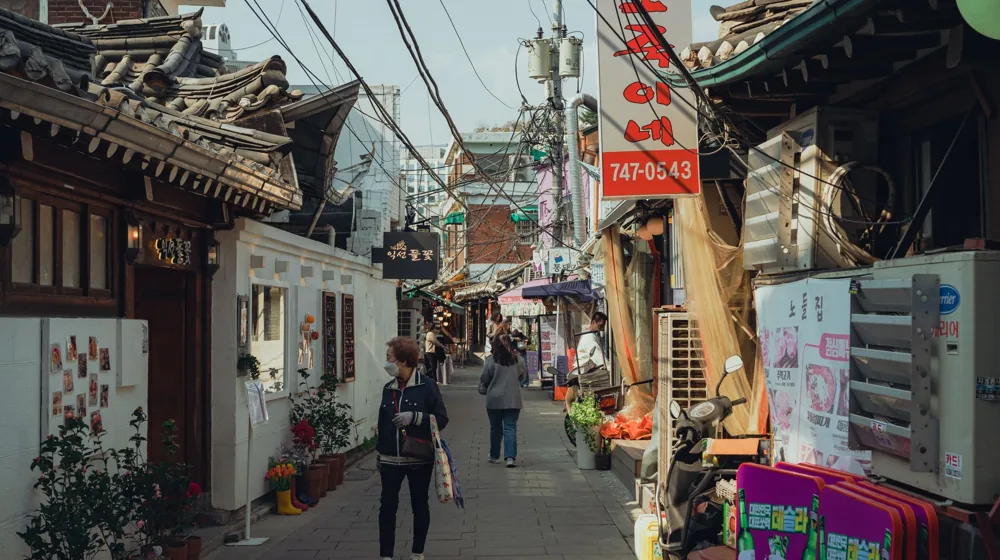

대중교통으로 전통주 양조장? 초보도 쉽다! 서울 근교 3곳 방문 가이드
사진: Theodore Nguyen / Pexels (무료 이미지, 출처 표기)
대중교통 접근성 좋은 전통주 양조장 선정 기준

대중교통으로 전통주 양조장을 방문하려는 분들이 가장 궁금해하는 것은 바로 '어디를 가야 편할까?'일 것입니다. 자가용 없이도 편리하게 방문할 수 있는 양조장을 고르려면 몇 가지 기준을 고려해야 합니다. 주요 기차역, 지하철역, 혹은 시외버스터미널에서 멀지 않고, 하차 후 도보 또는 짧은 거리의 시내버스나 택시로 이동 가능한 곳이 좋습니다.
또한, 단순히 접근성만 볼 것이 아니라, 예약 여부와 체험 프로그램의 종류, 방문 시간 등을 미리 확인하는 것이 중요합니다. 특히 주말이나 특정 시기에는 예약이 필수인 곳이 많으므로, 양조장 공식 홈페이지를 통해 최신 정보를 확인하는 습관을 들이는 것이 좋습니다.
초보도 OK! 서울/경기권 대중교통 추천 양조장 유형 3가지
서울 및 경기권에는 대중교통으로 비교적 쉽게 방문할 수 있는 전통주 양조장들이 있습니다. 특정 양조장의 이름보다, 접근성을 기준으로 3가지 유형으로 분류하여 설명해 드립니다. 실제 방문 전에는 반드시 해당 양조장의 최신 정보를 확인해야 합니다.
위 유형들을 참고하여, 본인의 출발지에서 가장 편리한 교통편과 선호하는 체험 프로그램을 기준으로 양조장을 선택해 보세요. 많은 양조장이 서울 및 수도권에서 1~2시간 내외의 거리에 위치해 있습니다.
양조장 방문 전 체크리스트: 이것만은 꼭!
즐거운 전통주 양조장 방문을 위해, 떠나기 전에 몇 가지 사항을 점검하는 것이 좋습니다.
- 예약 확인: 대부분의 양조장은 투어, 시음, 체험 프로그램이 사전 예약제로 운영됩니다. 방문 전 반드시 예약 여부와 시간을 확인하고, 변경 사항이 없는지 재확인하세요.
- 운영 시간 및 휴무일: 양조장별로 운영 시간이 다르며, 주중 또는 주말에 휴무인 곳도 있습니다. 방문 요일과 시간을 미리 확인하여 헛걸음하지 않도록 합니다.
- 교통편 및 이동 시간: 대중교통 노선(버스, 지하철, 기차)을 정확히 파악하고, 환승 정보 및 예상 이동 시간을 고려하여 충분한 여유를 두고 출발하세요. 마지막 대중교통 시간도 확인하는 것이 좋습니다.
- 신분증 지참: 시음 및 구매 시 성인 확인을 위해 신분증이 필요할 수 있습니다. 특히 술을 구매할 계획이라면 반드시 지참해야 합니다.
- 편안한 복장: 양조장 투어나 체험 프로그램은 걷거나 서 있는 시간이 길 수 있습니다. 편안한 신발과 복장을 착용하는 것이 좋습니다.
- 음주 후 이동 계획: 시음 프로그램에 참여할 경우, 음주 상태로 운전하는 것은 절대 금지입니다. 대중교통 이용 계획을 세웠다 하더라도, 동반자와 함께 적절한 양을 시음하고 안전하게 귀가할 수 있도록 미리 동선을 정해두는 것이 중요합니다.
전통주 양조장 체험, 어떤 프로그램이 있을까?
전통주 양조장은 단순히 술을 만드는 곳을 넘어 다양한 문화 체험의 장으로 진화하고 있습니다. 일반적인 체험 프로그램은 다음과 같습니다.
- 양조장 견학 및 역사 해설: 양조 시설을 둘러보며 전통주 제조 과정과 양조장의 역사, 철학에 대한 설명을 듣는 시간입니다.
- 전통주 시음: 양조장에서 생산되는 다양한 술(막걸리, 청주, 증류주 등)을 맛보고, 각 술의 특징과 어울리는 안주에 대한 설명을 들을 수 있습니다.
- 전통주 빚기 체험: 직접 누룩과 쌀을 섞어 막걸리나 약주를 빚어보는 실습 프로그램입니다. 직접 만든 술은 일정 기간 발효 후 가져갈 수 있는 경우가 많습니다.
- 푸드 페어링 클래스: 전통주와 어울리는 한식 안주를 직접 만들거나, 전문가가 추천하는 페어링을 경험하는 프로그램입니다.
- 전통주 문화 강좌: 전통주 관련 이론 교육, 라벨 디자인, 술잔 만들기 등 심화된 문화 체험을 제공하기도 합니다.
각 양조장마다 특색 있는 프로그램을 운영하므로, 방문 전 관심 있는 프로그램을 미리 확인하고 예약하는 것이 좋습니다.
대중교통으로 떠나는 전통주 여행 팁과 주의사항
대중교통을 이용한 전통주 양조장 여행은 특별한 경험을 선사합니다. 하지만 몇 가지 팁을 알아두면 더욱 즐겁고 안전한 여행이 될 수 있습니다.
여행 팁: 양조장 주변에는 숨겨진 맛집이나 지역 특산물을 파는 시장이 많습니다. 양조장 방문 전후로 주변 관광지나 명소를 함께 둘러보는 일정을 계획해 보세요. 예를 들어, 가평 인근 양조장을 방문한다면 남이섬이나 쁘띠프랑스 등 인근 관광지를 함께 묶어 여행의 풍성함을 더할 수 있습니다.
주의사항: 양조장에서 술을 구매할 경우, 이동 중에 파손되지 않도록 충분히 포장하고 안전하게 보관하는 것이 중요합니다. 또한, 대중교통 이용 시 다른 승객에게 피해를 주지 않도록 유의해야 합니다. 2024년 6월 기준으로, 많은 양조장이 예약제로 운영되니 공식 홈페이지에서 최신 정보를 확인하는 것이 가장 정확합니다.
🔗 이 글도 함께 보면 좋아요: 종갓집 내림음식 예약, 이것 모르면 실례! 품격 있는 방문 에티켓
관련 추천 상품
전통주 선물세트, 막걸리 만들기 키트, 한국 전통주 잔 관련 인기 상품 보러가기
이 포스팅은 쿠팡 파트너스 활동의 일환으로, 이에 따른 일정액의 수수료를 제공받습니다.